Budgets - Pivot - Ledger analyser
To view the budget figures in the Pivot view in the Ledger analyser:
- On the Ledger analyser 1 or Ledger analyser 2,
- Select the Trial balance, Income statement, Balance sheet or Standard column balances report types. In this example, Income statement the report type is selected.
- Select (tick) the Budget option.
- Select the Period or dates on the Free selection tab. In this example, the year from 1 March 2022 to 28 February 2023 is selected.
- Click on the Report button.
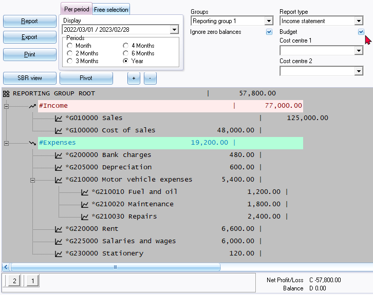
|
|
Buttons 2 and 1 at the bottom of the report - is shortcut keys to the last accessed T-Account viewer options or Pivot options. These shortcuts will be cleared when you close active forms, or when you open the Set of Books. |

- Click on the Pivot button.
|
|
You may use right-click in any area of the report to launch the context menu:
|

- The budget figures for the selected period is displayed:
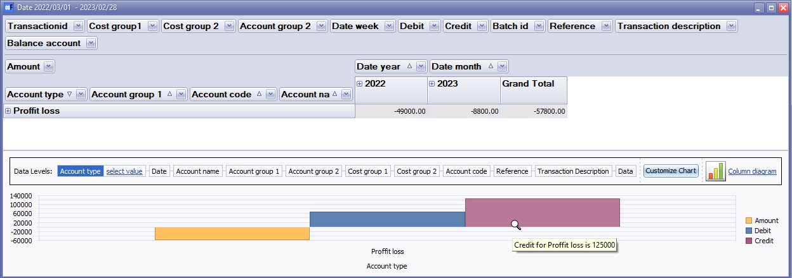
|
|
You may click on any graph to display the graph for the next available data level fields. The cursor will be displayed as a magnifying glass and move to the next dataset. In this example, "Date" is selected. 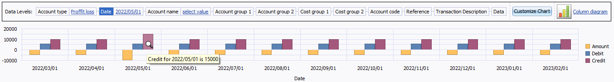 Move over graph area will display the values, e.g. "Credit for 2022/05/01 is 15000" |
- Click on the
 icon to Profit loss to list the budget totals for the account types (e.g. Income and Expenses financial categories for the selected period or dates. The icon will change
icon to Profit loss to list the budget totals for the account types (e.g. Income and Expenses financial categories for the selected period or dates. The icon will change to list totals for each financial category (i.e. Income and Expenses).
to list totals for each financial category (i.e. Income and Expenses).
|
|
You may right-click to launch the context menu, and select the following options: |

- Once all the available columns are expanded, the Budget for the financial year should be displayed as follows:
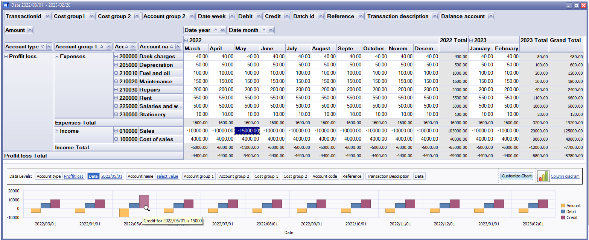
Default filter options
The default filter options, is as follows:
- Transaction id - The transaction id is automatically added for posted transactions in batches and documents as well as budget entries.
- Cost group 1 - If budgets were entered entered for Cost centres (Cost centre 1), the Cost centres for Cost centre 1 may be selected as filter options.
- Cost group 2 - If budgets were entered entered for Cost centres (Cost centre 2), the Cost centres for Cost centre 2 may be selected as filter options.
- Account group 2 - The groups set for Account group 2 in Setup → Groups (Setup ribbon) and linked to Accounting group 2 in Setup → Accounts (Setup ribbon).
- Date / week - The number of the week (from 1 to 53).
- Debit - The debit amounts.
- Credit - The credit amounts.
- Batch id - The batch id is auto generated for posted transactions in batches and documents. In the case of Budgets, the Batch id is "0" (zero).
- Reference - The default Reference "BUDG" or your reference as entered on the options section of the Budget tab. Select the available reference(s) on the list as filter options, as required.
- Transaction description - The default Description "Auto budget" or your description as entered on the options section of the Budget tab. Select the available description(s) on the list as filter options, as required.
- Balance account - The values, are as follows:
- 0 = Income and Expense (Income statement) accounts.
- 1 = Ledger accounts set as Balance sheet account type. These Capital, Assets and Liabilities accounts are reported on the Balance sheet.
- Amount - The total debit amounts an credit amounts (prefixed by a - (minus sign)) will be listed. Select the available amount(s) on the list as filter options, as required.
- Income expense - The options is as follows:
- True = Income and Expense (Income statement) accounts. The totals of the Income and Expense (Income statement) accounts will be displayed as True Total.
- False = Capital, Assets and Liabilities (Balance sheet) accounts. The totals of the Capital, Assets and Liabilities (Balance sheet) accounts will be displayed as False Total.
- Account - All accounts will be listed by Account code and description. Select the available account(s) on the list as filter options, as required.
- Year - The budget totals will be listed for each calendar year. For example, if your financial year starts on 1 January 2022 and ends on 31 December 2022, only one (1) financial year will be listed, i.e. 2022. In this example the financial year starts on 1 March 2022 and ends on 28 February 2023, the totals will be listed for 2022 and 2023. Select the year on the list as filter options, as required.
- Month - Period 0 to 12 will be listed if your Reporting dates are set for a 12 periods (Setup → Reporting dates (Setup ribbon), the period numbers will be listed. Select the period (month) on the list as filter options, as required.
- Date - All the dated for the selected period or dates selected on the options section of the Budget tab, will be listed. Select the available date(s) on the list as filter options, as required.
Change sequence add / remove Pivot grid fields
Hide Pivot grid fields
Select a Pivot grid field, right-click, and select Hide on the context menu. The selected Pivot grid field will be removed from the grid. For example, If you do not use Cost centres, You may hide Cost group 1 and Cost group 2.
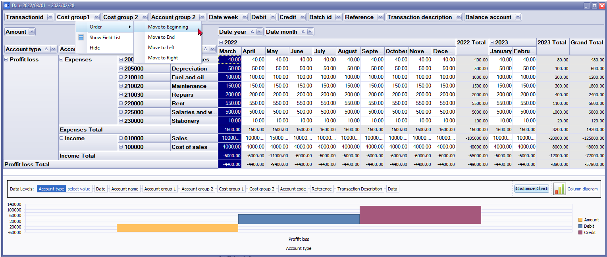
Order
You may select a Pivot grid field, right-click, and select the following options on the context menu:
- Move to Beginning - Move to the first Pivot grid field.
- Move to End - Move to the last Pivot grid field.
- Move Left - Move the selected Pivot grid field before the previous Pivot grid field to the left.
- Move Right - Move the selected Pivot grid field after the next Pivot grid field to the right.
|
|
You may use your mouse to drag a selected Pivot grid field to the right or left to your required position. 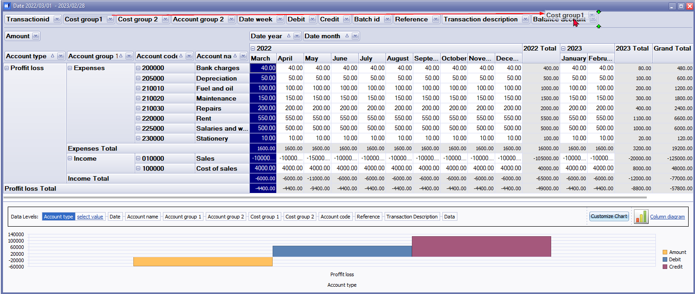 |
Filters
Right-click to access the "Show Field List" or the "Show Prefilter Dialog" options.
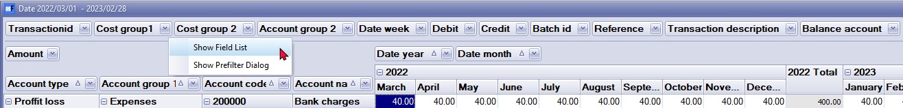
PivotGrid Field List
Pivot grid fields
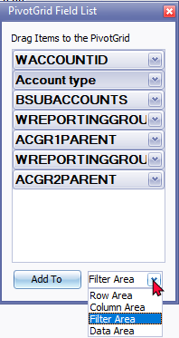
Show Prefilter Dialog
The "Prefilter Dialog" allows you to create custom filters for the Pivot.
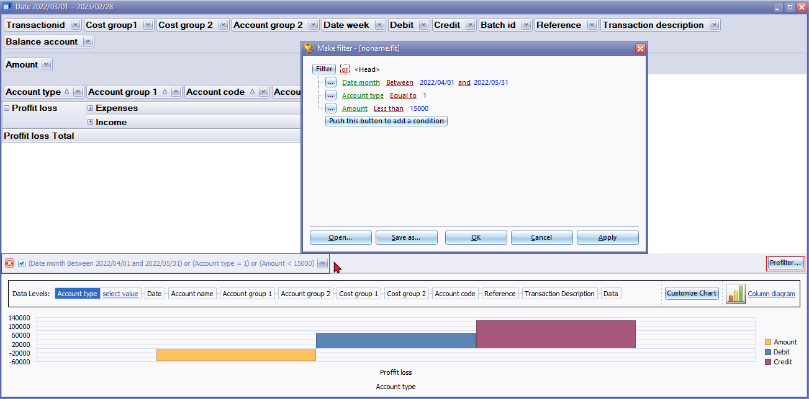
Customise the graphs
Graph types
You may select the one of the following diagrams to view the graph.
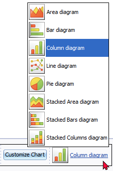
Series
By default, only the Amount and Debit and Credit amount is displayed.
You may remove the tick of the series or add a tick to a series. For example, if you wish to see only the Debit and Credit amounts, tick these options; and if you do not wish to view the Amount, remove the tick.
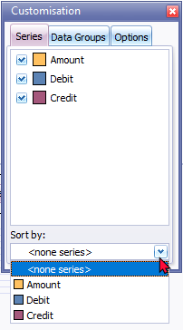
Sort by: select the options in the series to change the sequence in which the data in the graph will be displayed.
Data groups
Data groups is empty.
Options
You may change the default values for the “Legend, Title, Toolbox” and “Other (Value Hints)“ according to your requirements.